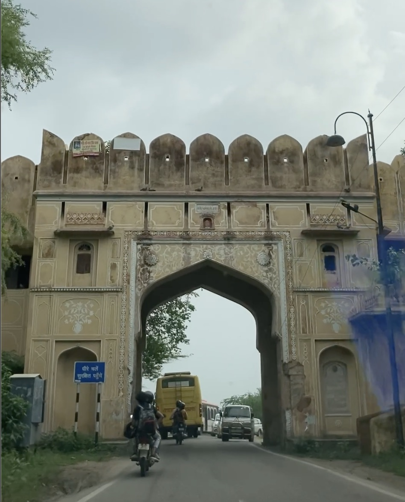
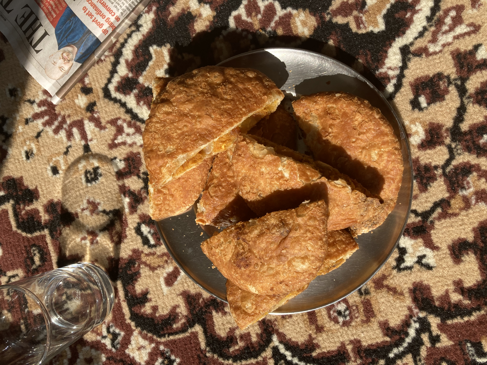
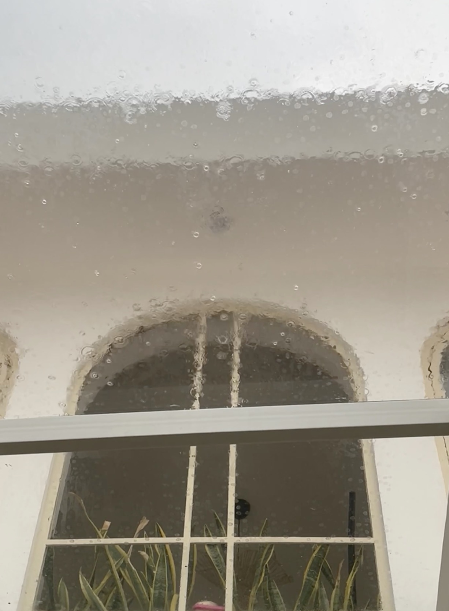
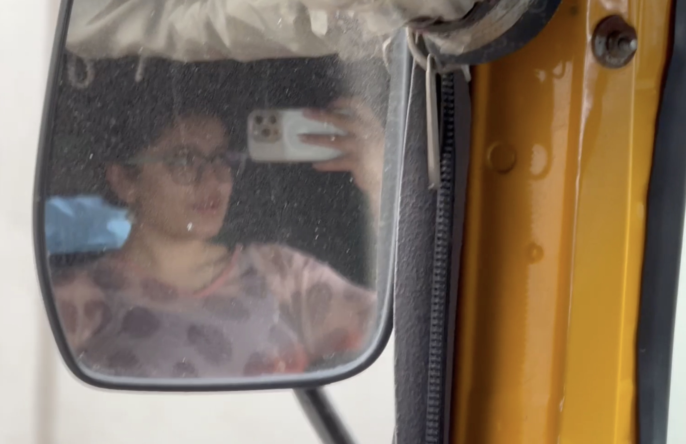
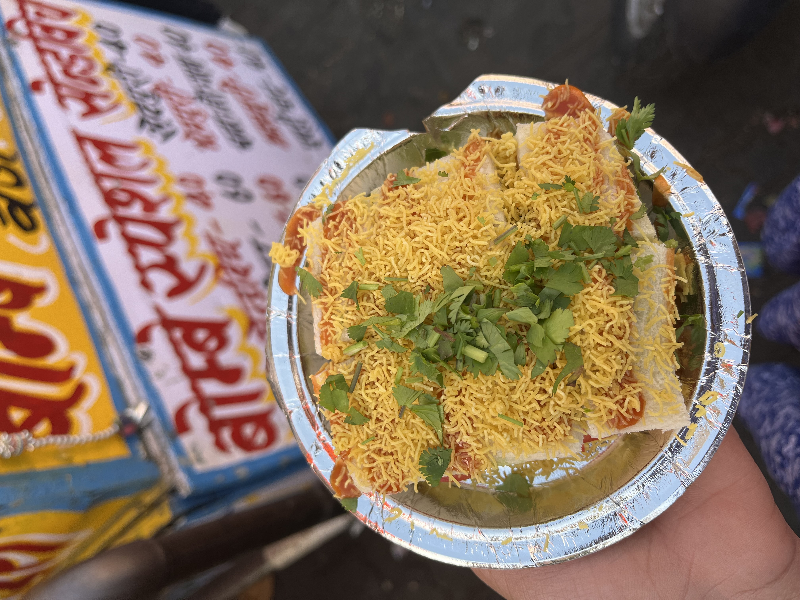
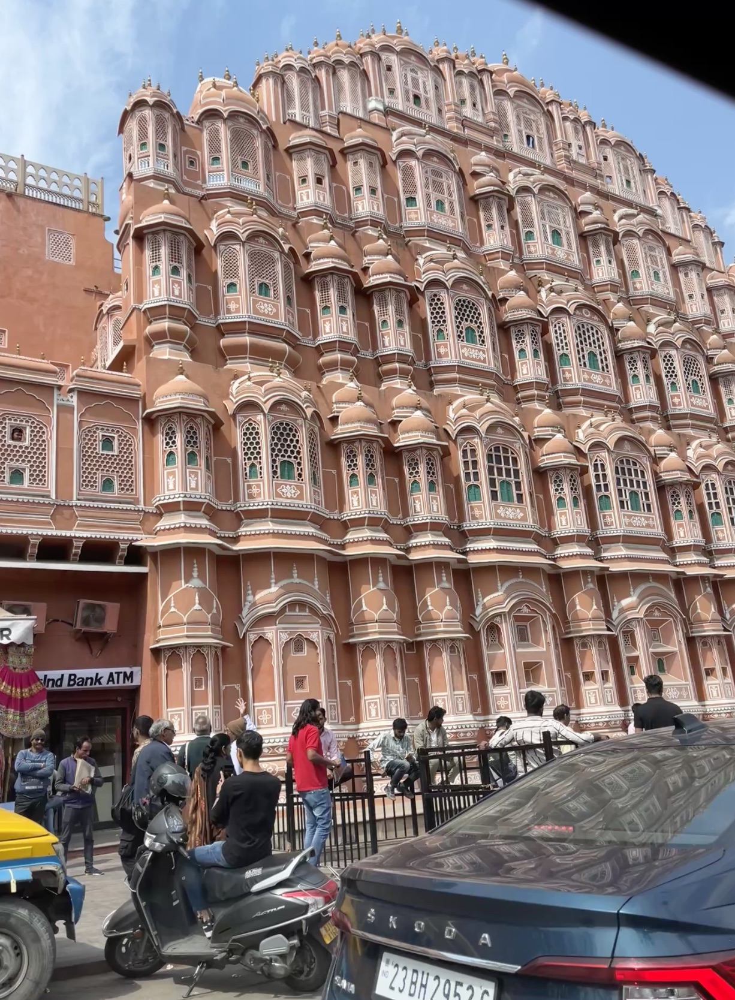
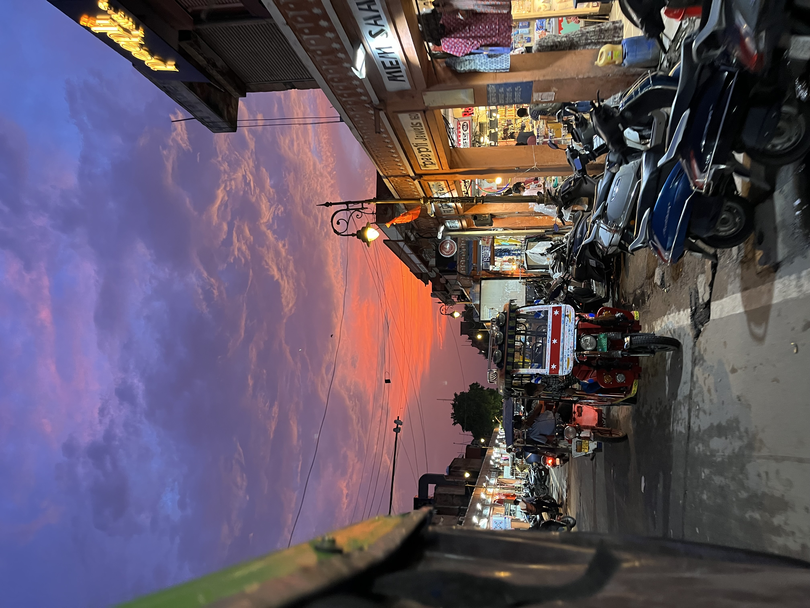
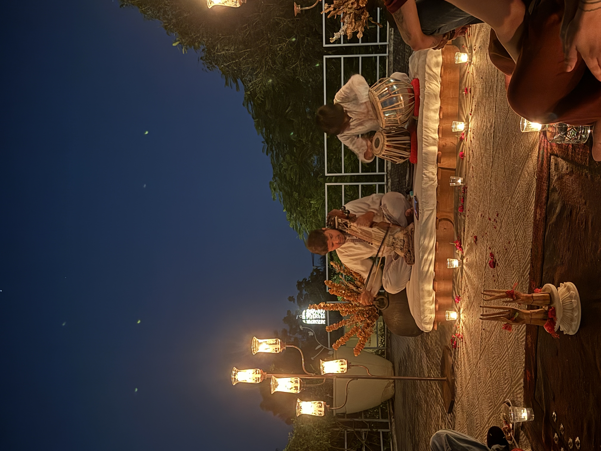

Volume
01. Entering Jaipur

Here we go, entering Jaipur. I was born in Jaipur, this is my parents' hometown as well! Our whole family is from here. My grandparents are settled here, and we visit quite often, such as during festivals of Holi and Diwali.
02. Breakfast

Warm onion kachoris welcome me for breakfast as I sit on the porch on my grandparents house. They tell me how happy they are to see me!
03. Afternoon Rain

After a lovely breakfast, I rest my eyes to the sound of rain overhead. Sleep consumes me after the long morning drive, a full stomach, and the love of my grandparents.
04. An Auto Ride

Oh, how I love auto rides! Let's head to my favourite place in Jaipur. Listen to the sounds of traffic, ironically peaceful.
05. Bombay Sandwich in Bapu Bazaar

We're here in Bappu Bazaar, also known as Link Road. It is home to my absolute favourite sandwich since my childhood, no one does it like the uncle here! I get it topped with grated Amul cheese, and don't forget to ask for extra ketchup on the side.
06. Hawa Mahal

Hawa Mahal - with it's beautiful stained glass windows, intricate white carvings and rusted pink colour - is a must see sight!
07. Sunset in Bapu Bazaar

I watch the sun set as I roam the streets, buying knick-knacks like jewellery, tops, home decor, and feeding myself to the special yoghurt gol-gappe!
08. A Musical Evening

I end the night by seeing a lovely traditional music performance, using an instrument called - 'Sarangi.' The performance moves me because of the emotions of the players, their soulful voice, and the familiarity of old, bollywood songs from my parents time.
Listen to a Day in Jaipur
Eight moments, one soundscape.